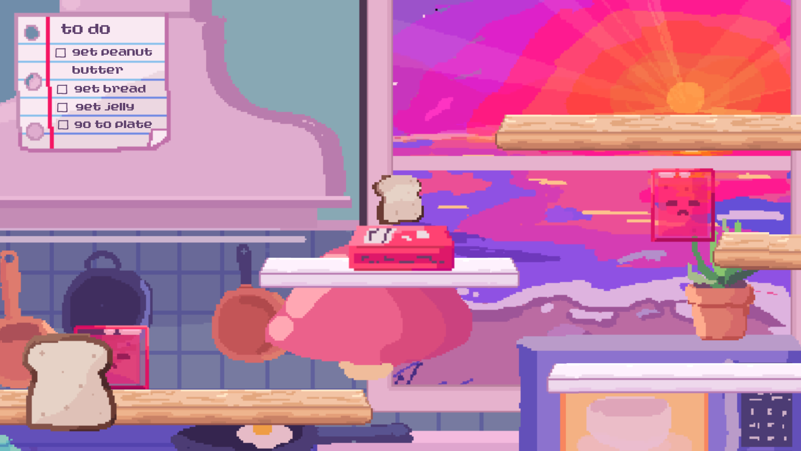

Hi, I'm Lily, also known as KiwilyPad, an artist and programmer passionate about making games!
I have worked on concept art, digital art, UI/UX, programming, and animation, but I am most interested in pursuing UI/UX.

Hi, I'm Lily, also known as KiwilyPad, an artist and programmer passionate about making games!
I have worked on concept art, digital art, UI/UX, programming, and animation, but I am most interested in pursuing UI/UX.
current project

An intergalactic multiplayer train demolition derby game. Battle against up to 3 friends, using abilities, bashing other trains, and riding rails to be the last train standing!
completed project

A short 2d pixel art platformer game where you play as a piece of bread trying to become a sandwich!
completed project
A short 2d pixel art platformer game where you play as a piece of bread trying to become a sandwich!